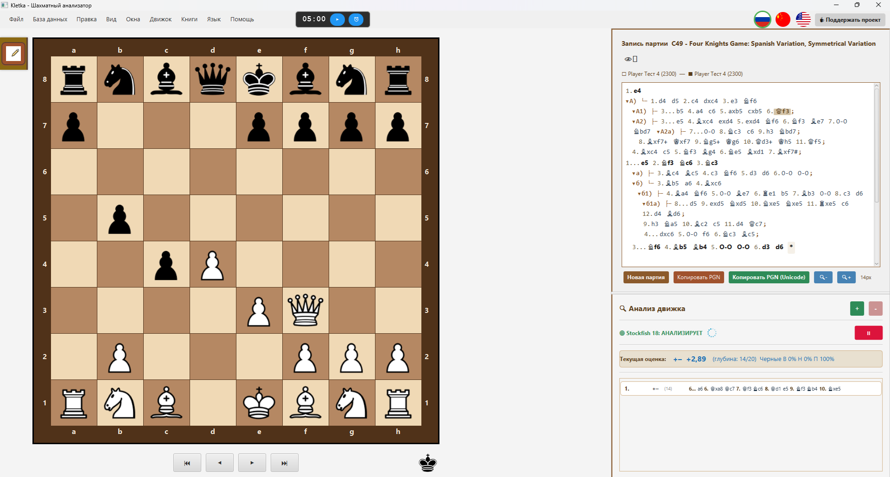
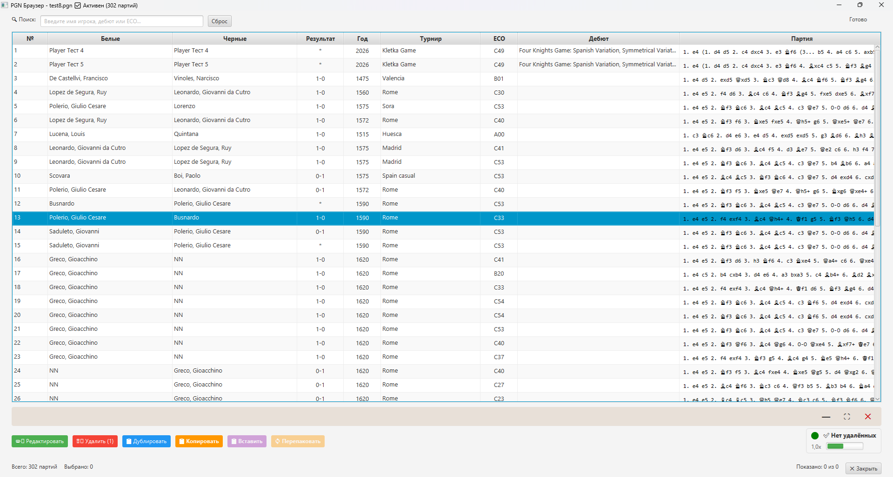
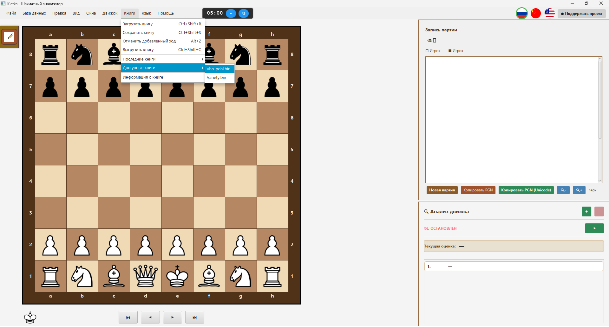
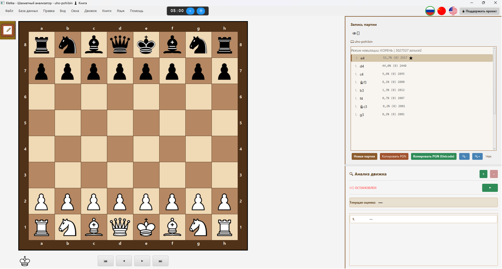

♟️ Клетка — Кроссплатформенный шахматный анализатор


Веб сайт: https://andreykhrypach.github.io/Kletka/
Клетка — это кроссплатформенный шахматный анализатор с поддержкой PGN файлов, вариантов, аннотаций и движка Stockfish. Программа имеет современный настраиваемый интерфейс и доступна для Windows, Linux и macOS.
📝 Журнал изменений
Подробную историю изменений смотрите в CHANGELOG.md.
🚀 Возможности
- 📁 Открытие, редактирование и сохранение PGN файлов
- 🧩 Полная поддержка вариантов и аннотаций
- 📚 Дебютные книги Polyglot — загрузка, просмотр и редактирование дебютных вариантов
- 📤 Экспорт дерева в Polyglot книгу — сохранение личного репертуара
- 🔍 Анализ позиции с Stockfish (UCI движок)
- 🎨 Настраиваемые темы доски
- 📋 Копирование позиции в формате FEN + ASCII (Ctrl+Shift+P)
- 🌍 Мультиязычность: Русский, English, 中文
- 🖥️ Кроссплатформенность: Windows, Linux, macOS
📺 Видеоуроки
Пошаговые руководства на нашем YouTube-канале:
Windows:
- Kletka: установка на Windows
- Kletka: настройка Stockfish на Windows
- Kletka: как пользоваться Polyglot книгами
Linux:
Скоро — новые уроки: macOS.
📚 Дебютные книги (Polyglot)
Клетка поддерживает дебютные книги Polyglot (файлы .bin), что позволяет вам интерактивно изучать шахматные дебюты — и создавать свой дебютный репертуар.
Как использовать дебютные книги:
- Перейдите в меню Книги → Загрузить книгу
- Выберите файл Polyglot книги (
.bin) - Навигация по вариантам с помощью клавиатуры:
- ↑ / ↓ — перемещение между вариантами
- → / Enter — выбор варианта
- ← — возврат на предыдущую позицию
Как редактировать книгу:
Клетка позволяет добавлять ходы прямо в загруженную книгу:
- Сделайте ход на доске — он автоматически добавится в книгу
- Нажмите Alt+Z — отменить последний добавленный ход
- Книги → Сохранить книгу (Ctrl+Shift+S) — применить изменения в
.binфайл - Книги → Выгрузить книгу (Ctrl+Shift+C) — выгрузить книгу
Экспорт дерева в Polyglot книгу:
Вы можете экспортировать текущее дерево анализа в Polyglot книгу:
- Проанализируйте или расставьте позицию с вариантами
- Перейдите в Книги → Экспорт в Polyglot книгу…
- Выберите папку и имя файла — книга создаётся в формате
.bin
Все ходы из дерева (главная линия + все варианты) попадают в книгу. Транспозиции и дубликаты автоматически дедуплицируются.
Полученную книгу можно загрузить обратно в Клетку или использовать в Stockfish, Leela, ChessBase, Scid, Arena и других совместимых программах.
Системные требования для книг
Для работы с дебютными книгами Клетка требует:
- Java 17 LTS (рекомендуется Liberica Full JDK)
- Аргументы JVM (автоматически применяются при запуске через лаунчер):
--add-opens java.base/sun.nio.ch=ALL-UNNAMED
--add-opens java.base/sun.misc=ALL-UNNAMEDПримечание: Если вы запускаете Клетка из командной строки, используйте:
java --add-opens java.base/sun.nio.ch=ALL-UNNAMED \
--add-opens java.base/sun.misc=ALL-UNNAMED \
-jar Kletka.jarЭти аргументы необходимы для быстрой работы с Polyglot книгами с использованием файлов, отображаемых в память (mmap).
🔧 Технические детали: Memory-Mapped Files
Клетка использует memory-mapped files (MappedByteBuffer) для молниеносно быстрой работы с Polyglot книгами, даже на HDD.
Важно: Mapped byte buffer не освобождается сборщиком мусора JVM, пока на него есть ссылка. Чтобы вы могли удалить, переместить или заменить файл книги во время работы Kletka, приложение явно вызывает:
sun.misc.Unsafe.invokeCleaner(mappedByteBuffer);Это немедленно снимает блокировку файла на уровне ОС.
Что это значит для вас:
- ✅ Можно безопасно удалять и перемещать
.binфайл после выгрузки книги - ✅ Можно заменять файл книги на новый
- ✅ Никаких ошибок "файл занят другим процессом" на Windows
Linux: известные проблемы
На Debian Trixie / Ubuntu 24.04+ с Wayland диалоги могут не получать фокус (клавиатура работает, мышь — нет). Это известный баг JavaFX 17 + GTK 3 + Wayland.
Решение: уже включено в Клетку — приложение запускается с флагом -Djdk.gtk.version=2, который использует GTK 2 через XWayland.
Рекомендуемые книги:
Для наилучших результатов мы рекомендуем использовать книгу uho-pohl.bin, которая содержит обширные качественные дебютные варианты.
Где взять Polyglot книги:
Вы можете скачать бесплатные дебютные книги из официального репозитория Polyglot: 🔗 Polyglot Books Repository
Другие популярные источники:
- UHO-Pohl openings — качественная база дебютов
- ChessTempo's Polyglot books
- Создайте свою собственную книгу в формате Polyglot
📋 Копирование позиции (FEN + ASCII)
Вы можете скопировать текущую позицию в буфер обмена в удобном формате — FEN плюс ASCII-диаграмма:
- Меню: Правка → Копировать позицию
- Горячая клавиша: Ctrl+Shift+P
Это удобно для:
- Обмена позициями в чатах, на форумах, в issue-трекерах
- Анализа позиций с ИИ-ассистентами
- Документирования позиций в текстовых файлах
Вывод содержит FEN в первой строке и ASCII-диаграмму ниже, обёрнутую в Markdown-блок кода для удобной вставки.
🐛 Известные проблемы на macOS
Drag-and-drop: фигура "хватается за угол"
Симптомы:
- Фигура визуально берётся за угол, а не за центр.
- Чтобы сделать ход, мышку нужно вести в угол целевой клетки.
- После drop курсор может исчезнуть, пока мышь не попадёт в меню.
Причина: Известный баг JavaFX JDK-8333919 — на macOS игнорируются смещения dragViewOffsetX/Y.
Решение: Исправлен в JavaFX 23 (требует JDK 21+). Клетка сейчас использует Java 17 + JavaFX 17.
Обходной путь:
- Используйте click-to-move (клик на фигуру → клик на клетку) вместо drag-and-drop.
- Или дождитесь миграции Клетки на JDK 25 + JavaFX 25 (планируется в будущих релизах).
Статус: Отслеживается в issue #XXX. Будет исправлено при миграции на новый стек.
🖥️ Скриншоты
Краткий обзор
 |
 |
| Главный интерфейс | Обозреватель PGN |
 |
 |
| Открытие Polyglot книги | Загруженная Polyglot книга |
Полный размер
Нажмите на изображение, чтобы открыть его в полном размере в новой вкладке.
📦 Установка
Windows
Скачайте Kletka.exe со страницы Releases и запустите установщик.
macOS
Скачайте Kletka.dmg, откройте его и перетащите Kletka.app в папку Applications.
Linux (Debian/Ubuntu)
sudo dpkg -i kletka*.deb🛠️ Сборка из исходников
Требования
- Java 17 (рекомендуется Liberica Full JDK) — скачайте с BellSoft
- Maven — установите через
brew install maven(macOS) илиsudo apt install maven(Linux)
Важные аргументы JVM для разработки
При запуске из IDE добавьте следующие параметры VM:
--add-opens java.base/sun.nio.ch=ALL-UNNAMED
--add-opens java.base/sun.misc=ALL-UNNAMEDЭто обеспечивает полную поддержку Polyglot книг во время разработки.
git clone https://github.com/AndreyKhrypach/Kletka.git
cd Kletka
mvn clean packageСборка для конкретной платформы
# Windows
mvn clean package -P windows
# Linux
mvn clean package -P linux
# macOS
mvn clean package -P mac🧠 Настройка Stockfish
Клетка использует движок Stockfish для анализа. Вам нужно установить его отдельно.
Windows
- Скачайте Stockfish с официального сайта: https://stockfishchess.org/download/
- Распакуйте архив
- В Клетка перейдите в Движок → Настроить движок и выберите файл
stockfish.exe
Linux (Debian/Ubuntu)
sudo apt install stockfishЗатем в Клетка перейдите в Движок → Настроить движок и выберите бинарный файл stockfish.
macOS
brew install stockfishЗатем в Клетка перейдите в Движок → Настроить движок и выберите бинарный файл stockfish.
📄 Лицензия
Этот проект распространяется под лицензией GNU General Public License v3.0. Подробнее см. файл LICENSE.
👨💻 Автор
Andrey Khrypach
⭐ Поддержка
Если вам нравится проект, поставьте ⭐ на GitHub!